คู่มือปฏิบัติงาน — โรงเรียน
ระบบรถรับส่งนักเรียนจังหวัดลำปาง — https://schoolbuslampang.com เวอร์ชัน Phase 10.13C • อัปเดต 2026-06-24 • ปรับปรุงล่าสุด 2026-09-06 (ตรวจกับระบบจริง commit 14caf5b)
📷 หมายเหตุภาพหน้าจอ: ข้อมูลส่วนบุคคล (ชื่อนักเรียน/ผู้ปกครอง เบอร์โทร) ในภาพถูกเบลอเพื่อความเป็นส่วนตัว — เมื่อใช้งานจริงจะแสดงข้อมูลตามปกติ
ภาพรวม 30 วินาที
- บทบาทนี้ทำอะไรได้ (บัญชีหลัก):
- ดูแดชบอร์ดประจำวัน (สถานะรับ-ส่ง รายรอบ/รายคันรถ)
- จัดการข้อมูลนักเรียน (ค้นหา/เพิ่ม/แก้ไข/ย้ายรถ/ลบ) + นำเข้าจาก Excel/CSV + ย้อนกลับ
- เพิ่มรถรับส่ง (สร้างบัญชีคนขับอัตโนมัติ) + ส่งตรวจและรับรองรถ
- ดู/สร้างจุดรับส่ง + ดูตำแหน่งรถ live + อนุมัติคำขอจากคนขับ + ยืนยันแทนคนขับ
- จัดการบัญชีครูประจำสายชั้น + ดูเหตุฉุกเฉิน + ประวัติการแก้ไข
- ดูรายงานรายวัน/รายเดือน/สรุป และส่งออก CSV/Excel/PDF
- บัญชีนี้มี 2 ระดับ: บัญชีหลักของโรงเรียน (จัดการเต็มรูปแบบ) และ บัญชีครูประจำสายชั้น (ดูข้อมูลได้อย่างเดียว เฉพาะระดับชั้นที่รับผิดชอบ — สร้างโดยบัญชีหลัก)
- ขอบเขตของบัญชีครูประจำสายชั้น (ตรวจกับระบบจริง 6 ก.ย. 2569): การจำกัดตามระดับชั้นมีผลกับทุกหน้าในกลุ่มโรงเรียน รวมถึงหน้า "รายงาน" แล้ว — ทั้งตัวเลขบนหน้าจอ (แท็บ รายวัน / รายเดือน / สรุปภาพรวม) และไฟล์ที่ส่งออก (CSV/Excel/PDF) นับเฉพาะนักเรียนในระดับชั้นที่ครูคนนั้นรับผิดชอบ เมื่อเข้าใช้งานด้วยบัญชีครูประจำสายชั้น ด้านบนหน้ารายงานจะมีป้าย "ขอบเขตข้อมูล: ป.X" พร้อมข้อความ "ตัวเลขทุกส่วนในหน้านี้นับเฉพาะสายชั้นของคุณ" กำกับไว้ทุกแท็บ (บัญชีหลักของโรงเรียนเห็นข้อมูลทั้งโรงเรียนตามเดิม จึงไม่มีป้ายนี้)
- เข้าระบบด้วย: ชื่อผู้ใช้ (username) + รหัสผ่าน — บัญชีหลักได้จากเขตพื้นที่/admin, ครูสายชั้นได้จากบัญชีหลัก (รูปแบบเช่น
SCH0001-P4) - อุปกรณ์ที่แนะนำ: คอมพิวเตอร์เป็นหลัก (งานจัดการ/นำเข้า/รายงานสะดวกบนจอใหญ่ เห็นเมนูครบในแถบข้าง) — มือถือใช้ดูภาพรวม/ค้นหา/ตำแหน่ง/รายงาน (แถบล่าง 4 แท็บ)
💡 แนะนำบันทึก URL ไว้ที่หน้าจอหลัก (Add to Home Screen) เพื่อเปิดใช้งานเหมือนแอป 🔒 หัวข้อที่มีป้าย (บัญชีหลักเท่านั้น) บัญชีครูประจำสายชั้นทำไม่ได้ — ถ้าหลุดเข้าไปได้ ระบบจะตอบ "บัญชีครูประจำสายชั้นเข้าถึงได้เฉพาะข้อมูลในการดูเท่านั้น"
สารบัญงาน
| # | งาน | ใช้เมื่อ |
|---|---|---|
| 1 | เข้าสู่ระบบ (+ เปลี่ยนรหัสครั้งแรก) | ทุกครั้งที่เริ่มใช้งาน |
| 2 | ดูแดชบอร์ดประจำวัน | ดูภาพรวมสถานะรับ-ส่งวันนี้ |
| 3 | ค้นหา/แก้ไขข้อมูลนักเรียน | จัดการข้อมูลนักเรียนรายคน |
| 4 | นำเข้านักเรียน (ตรวจสอบก่อน/ยืนยัน) | เพิ่มนักเรียนทีละหลายคนจากไฟล์ |
| 5 | ดูประวัติการนำเข้า + ย้อนกลับ | ตรวจสอบ/ยกเลิกชุดนำเข้าที่ทำไปแล้ว |
| 6 | นำเข้าแบบเดิม (สำรอง) | นำเข้าแบบทันทีครั้งเดียว |
| 7 | ดูรถรับส่ง | ดูรถ/คนขับ/ความปลอดภัย/นักเรียนในรถ |
| 8 | เพิ่มรถรับส่ง | เพิ่มรถใหม่ + สร้างบัญชีคนขับ |
| 9 | ส่งตรวจและรับรองรถ | ส่งใบตรวจสภาพรถให้ขนส่ง |
| 10 | แผนที่จุดรับส่ง | สร้าง/แก้จุดรับส่ง + กำหนดนักเรียน |
| 11 | ดูตำแหน่งรถ live | ติดตามตำแหน่งรถปัจจุบัน |
| 12 | อนุมัติคำขอรายชื่อ | คนขับขอเพิ่ม/ถอนนักเรียน |
| 13 | ยืนยันรับ-ส่งแทนคนขับ | คนขับลืมเช็กชื่อ |
| 14 | จัดการบัญชีครูประจำสายชั้น | สร้าง/รีเซ็ต/ลบบัญชีครู |
| 15 | ดูเหตุฉุกเฉิน | ตรวจเหตุจากรถที่ให้บริการ |
| 16 | ดูประวัติการแก้ไข (Audit Log) | สอบทานการกระทำในโรงเรียน |
| 17 | ขอโอนย้ายนักเรียน / กู้คืนรถ | ย้ายนักเรียนข้ามโรงเรียน / กู้รถถูกปิด |
| 18 | รายงานและส่งออก | ดู/ดาวน์โหลดรายงาน |
| 19 | ออกจากระบบ / ลืมรหัสผ่าน | สิ้นสุดการใช้งาน / กู้รหัส |
งานที่ 1 — เข้าสู่ระบบ (+ เปลี่ยนรหัสครั้งแรก)
ใช้เมื่อ: เริ่มใช้งานระบบ
ขั้นตอน:
- เปิดเบราว์เซอร์ไปที่ https://schoolbuslampang.com
- กรอก ชื่อผู้ใช้ (username) ที่ช่อง "ชื่อผู้ใช้หรือทะเบียนรถ" (ในช่องจะมีข้อความตัวอย่างว่า "เช่น school001 หรือ กข-1234" — โรงเรียนใช้ชื่อผู้ใช้ ไม่ใช่ทะเบียนรถ) โดยบัญชีหลัก = ชื่อที่เขต/admin สร้างให้; ครูสายชั้น = ชื่อที่บัญชีหลักตั้งให้ เช่น
SCH0001-P4 - กรอก รหัสผ่าน
- กด เข้าสู่ระบบ

ภาพ: หน้าเข้าสู่ระบบ (เดสก์ท็อป)

ภาพ: หน้าเข้าสู่ระบบ (มือถือ)
ขั้นตอน (เปลี่ยนรหัสครั้งแรก — เฉพาะบัญชีที่ยังต้องเปลี่ยน):
- เมื่อเข้าระบบ ระบบจะพาไปหน้า "เปลี่ยนรหัสผ่าน" พร้อมข้อความ "กรุณาเปลี่ยนรหัสผ่านเริ่มต้น" (ใช้เมนูอื่นไม่ได้จนกว่าจะเปลี่ยนสำเร็จ)
- กรอก รหัสผ่านปัจจุบัน / รหัสผ่านใหม่ / ยืนยันรหัสผ่านใหม่ (รหัสใหม่อย่างน้อย 8 ตัวอักษร, ไม่ซ้ำรหัสเดิม, ยืนยันต้องตรงกัน)
- กดยืนยัน → ขึ้น "เปลี่ยนรหัสผ่านสำเร็จ กรุณาเข้าสู่ระบบใหม่" → เข้าสู่ระบบใหม่อีกครั้ง

ภาพ: หน้าเปลี่ยนรหัสผ่าน (บังคับเปลี่ยนครั้งแรก)
✅ ผลลัพธ์ที่ถูกต้อง: เข้าถึงแดชบอร์ดโรงเรียนได้ (ระบบต่ออายุการเข้าสู่ระบบให้อัตโนมัติระยะหนึ่ง — ปิดเครื่องแล้วเปิดมาใหม่มักยังอยู่ในเซสชันเดิม เมื่อหมดอายุจะพากลับไปหน้าเข้าสู่ระบบเอง)
⚠️ ถ้าติดปัญหา:
- หลังเปลี่ยนรหัส token เก่าใช้ไม่ได้ทันที → ต้องเข้าสู่ระบบใหม่
- "ชื่อผู้ใช้หรือรหัสผ่านไม่ถูกต้อง" → ชื่อผู้ใช้/รหัสผิด
- "บัญชีนี้ถูกปิดการใช้งาน" → ขึ้นระหว่างใช้งาน ไม่ใช่ตอนกดเข้าสู่ระบบ แปลว่าบัญชีถูกปิดหลังเข้าระบบไปแล้ว ถ้าลองเข้าใหม่จะขึ้นว่า "ชื่อผู้ใช้หรือรหัสผ่านไม่ถูกต้อง" แทน — ติดต่อผู้ดูแลระบบ/เขต
- "มีการพยายามเข้าสู่ระบบหลายครั้งจากเครือข่ายนี้" → ระบบระงับชั่วคราวประมาณ 15 นาที เกิดได้ 2 กรณี คือ กรอกรหัสผ่านผิดบัญชีเดิมจากเครื่อง/เครือข่ายเดิมครบ 10 ครั้งใน 15 นาที หรือมีการพยายามเข้าสู่ระบบจากเครือข่ายเดียวกันเกิน 20 ครั้งใน 15 นาที — บัญชีไม่ได้ถูกปิดถาวร
- "ไม่สามารถเชื่อมต่อระบบได้" → ไม่มีอินเทอร์เน็ต
งานที่ 2 — ดูแดชบอร์ดประจำวัน
ใช้เมื่อ: ต้องการดูภาพรวมสถานะรับ-ส่งของวันนี้ (หน้าแรกหลังเข้าสู่ระบบ)
ขั้นตอน:
- เปิดเมนู แดชบอร์ดโรงเรียน (มือถือ = แท็บ หน้าแรก)
- ดู แถบแจ้งเตือนด้านบน — "ยังไม่เริ่มดำเนินการวันนี้" / "สิ่งที่ต้องติดตามวันนี้" (รอส่งเช้า, รอรับเย็น, เหตุฉุกเฉิน 7 วัน) / "ดำเนินการครบแล้ว ไม่มีรายการค้าง"
- กางหัวข้อ "ความครบถ้วนข้อมูล" ดู % นักเรียนมีรถ (ลิงก์ "ดูที่ยังไม่ผูก") / ผู้ปกครองครบ (ลิงก์ "ดูรายชื่อ") / รถผ่านตรวจสภาพ (ลิงก์ "ดูรถ") / ประกันภัยครบ (ลิงก์ "ดูรถ") — ลิงก์จะขึ้นเฉพาะแถวที่ยังไม่ครบ
- ดู KPI 4 ตัว (นักเรียนทั้งหมด / รถรับส่ง / นักเรียนลา เช้า-เย็น / เหตุฉุกเฉิน 7 วัน) และ ชิปสรุป 4 อัน (นักเรียนลา / ยังไม่ยืนยัน / สำเร็จแล้ว / เหตุฉุกเฉิน 7 วัน)
- ดู การ์ดรอบ 2 ใบ ("ส่งเช้า" และ "รับเย็น" — เสร็จ/ทั้งหมด, %, รอ, ลา) และกาง "วิเคราะห์ภาพรวม" (กราฟวงกลมเช้า/เย็น + กราฟแท่งรถที่มีรายการค้างมากสุด)
- ดู "สถานะรายคัน" — กดขยายแต่ละแถวรถดูนักเรียนรายคน (ส่งเช้า/รับเย็น/เวลา/ลา) มีช่องค้นหาทะเบียน
- ใช้ ปุ่มลัด (Action Row) ได้แก่ "ค้นหานักเรียน" (ทุกบัญชี) · "จัดการรถ" (บัญชีหลักเท่านั้น) · "รายงานวันนี้" (ทุกบัญชี) · "ยืนยันแทนคนขับ" (บัญชีหลักเท่านั้น)
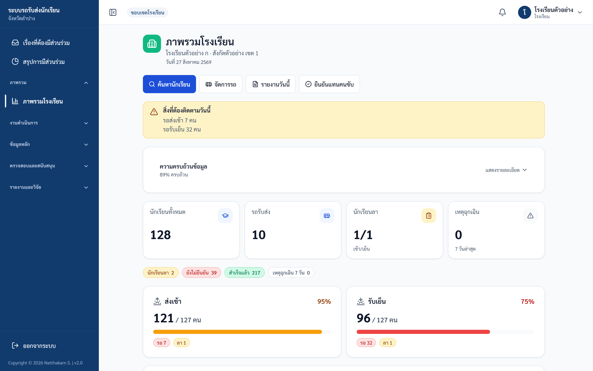
ภาพ: แดชบอร์ดโรงเรียน
✅ ผลลัพธ์ที่ถูกต้อง: เห็นภาพรวมสถานะรับ-ส่งวันนี้ครบทุกการ์ด
ℹ️ บัญชีครูสายชั้นจะเห็นแดชบอร์ดเฉพาะตัวเลขของระดับชั้นที่รับผิดชอบเท่านั้น
งานที่ 3 — ค้นหา/แก้ไขข้อมูลนักเรียน
ใช้เมื่อ: ค้นหา/เพิ่ม/แก้ไข/ย้ายรถ/ลบ นักเรียนรายคน
ขั้นตอน (ค้นหา — ทุกบัญชี):
- เปิดเมนู ข้อมูลนักเรียน (มือถือ = แท็บ ค้นหา)
- พิมพ์ในช่อง "ค้นหาชื่อ นามสกุล หรือรหัส…" (ค้นจากชื่อ/นามสกุล/รหัสนักเรียน)
- กรองด้วยตัวกรอง "ทุกสถานะการผูกรถ" (เลือก "ยังไม่ผูกรถ" เพื่อดูเฉพาะนักเรียนที่ยังไม่มีรถ หรือ "ผูกรถแล้ว") และ/หรือตัวกรอง "ทุกระดับชั้น" (อ.1 – ม.6) ตามต้องการ — ลิงก์ "ดูที่ยังไม่ผูก" ในหัวข้อ "ความครบถ้วนข้อมูล" บนแดชบอร์ดพามาที่หน้านี้พร้อมตั้งตัวกรอง "ยังไม่ผูกรถ" ให้แล้ว
ขั้นตอน (แก้ไขนักเรียน — บัญชีหลักเท่านั้น):
- กดเลือกนักเรียน → เปิดหน้าต่าง "แก้ไขข้อมูลนักเรียน" (มี 3 ส่วน)
- แก้ ข้อมูลนักเรียน: คำนำหน้า, ชื่อ*, นามสกุล*, ระดับชั้น, ห้อง, ใช้บริการรอบเช้า/เย็น
- แก้ ผู้ปกครอง: ชื่อ + เบอร์
- แก้ รถรับส่ง: เลือกรถจากช่องค้นหา (combobox)
- กด "บันทึกข้อมูลนักเรียน" — หรือใช้ "เปลี่ยนรถ / เพิ่มเข้ารถ / ลบออกจากรถ" (โผล่เมื่อเปลี่ยนรถ), "ขอโอนย้ายนักเรียน", "ลาออก / ลบออกจากระบบ"
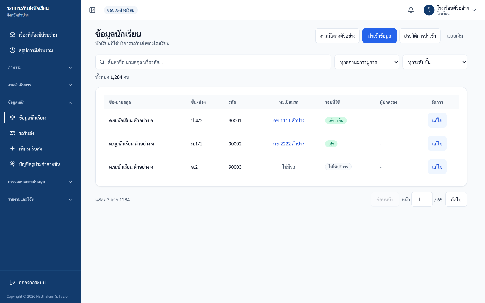
ภาพ: ข้อมูลนักเรียน (ค้นหา/จัดการ/นำเข้า)
✅ ผลลัพธ์ที่ถูกต้อง: บันทึกแล้วข้อมูลนักเรียนอัปเดต / รถเปลี่ยนตามที่ตั้ง
⚠️ ถ้าติดปัญหา:
- เปลี่ยนชื่อ/เบอร์ผู้ปกครอง = สร้างผู้ปกครองใหม่เฉพาะนักเรียนคนนี้ (ไม่กระทบพี่น้องที่ใช้ผู้ปกครองร่วมกัน) และผู้ปกครองใหม่ยังไม่ผูกบัญชี LINE → ต้องให้ผู้ปกครองผูกใหม่เองทาง LINE OA (มีคำเตือนสีฟ้าในหน้าต่าง)
- เบอร์ผู้ปกครองต้องเป็นตัวเลข 9–10 หลัก (ระบบลบขีดและเติม 0 นำหน้าให้เบอร์มือถือ 9 หลักอัตโนมัติ)
- ลบนักเรียน = soft delete → ซ่อนจากรายการแต่ประวัติยังอยู่ (ค้นหาไม่เจอเพราะถูกกรองออก)
🔒 ปุ่มด้านบน ("ดาวน์โหลดตัวอย่าง" / "นำเข้าข้อมูล" / "ประวัติการนำเข้า" / "แบบเดิม") และการแก้ไขทั้งหมด เป็น บัญชีหลักเท่านั้น — ครูสายชั้นดูรายชื่อได้อย่างเดียว, เบอร์ผู้ปกครองถูกปกปิดเป็น
081****67และไม่เห็นที่อยู่จุดลงรถ
งานที่ 4 — นำเข้านักเรียน (ตรวจสอบก่อน/ยืนยัน) — (บัญชีหลักเท่านั้น)
ใช้เมื่อ: เพิ่มนักเรียนทีละหลายคนจาก Excel/CSV แบบปลอดภัย (ตรวจทีละแถวก่อนเขียนจริง)
ขั้นตอน:
- ที่หน้าข้อมูลนักเรียน กด "ดาวน์โหลดตัวอย่าง" เพื่อได้ไฟล์ template (ดาวน์โหลดเป็น
แบบฟอร์มนำเข้านักเรียน.csvมีหัวคอลัมน์ + แถวตัวอย่าง 2 แถว) แล้วกรอกข้อมูลทับแถวตัวอย่าง บันทึกเป็น .csv หรือ .xlsx - กด "นำเข้าข้อมูล" → อัปโหลดไฟล์ → ระบบ "ตรวจสอบไฟล์ก่อนนำเข้า" (ยังไม่บันทึก)
- ดูตารางผลรายแถว + การ์ดสรุป (ทั้งหมด / พร้อมนำเข้า / ซ้ำในโรงเรียน / คำเตือน / ข้อผิดพลาด / รถมีปัญหา) + ตัวกรอง
- ติ๊กเลือกรายการที่ต้องยืนยัน (เช่น อัปเดตผู้ปกครอง, กู้คืนนักเรียนที่เคยลบ)
- กด "ยืนยันนำเข้า"
คอลัมน์ไฟล์ที่รับ: รหัสนักเรียน*, คำนำหน้า, ชื่อ*, นามสกุล*, ชั้น, ห้อง, ชื่อผู้ปกครอง, เบอร์โทรผู้ปกครอง, ทะเบียนรถ
สถานะรายแถวที่อาจพบ: พร้อมนำเข้า / รหัสซ้ำต่างโรงเรียน (นำเข้าได้) / มีอยู่แล้วในโรงเรียนนี้ (ข้าม) / ผู้ปกครองไม่ตรง (ยืนยันได้) / เคยถูกลบ ต้องยืนยันกู้คืน / ไม่พบรถ / ขาดจังหวัดทะเบียน / รถถูกปิดใช้งาน / รหัสนักเรียนผิด / ข้อมูลไม่ครบ / เบอร์ผู้ปกครองผิด / พบรหัสซ้ำในไฟล์เดียวกัน (นำเข้าไม่ได้)
ปุ่มเสริมในแถว: "ขอกู้คืนรถ" (กรณีรถถูกปิดใช้งาน) · "ดาวน์โหลดรายงาน (CSV)"
✅ ผลลัพธ์ที่ถูกต้อง: นักเรียนที่เลือกถูกเพิ่มเข้าระบบ และมีชุดนำเข้าให้ตรวจสอบย้อนหลังได้ (เก็บ 14 วัน)
⚠️ ถ้าติดปัญหา:
- ไฟล์ต้องเป็น .xlsx หรือ .csv เท่านั้น · ขนาด ≤ 5MB · ≤ 5000 แถว — ไฟล์ .xls (Excel รุ่นเก่า) นำเข้าไม่ได้ แม้หน้าต่างจะให้เลือกไฟล์ .xls ได้ และมีข้อความใต้ช่องเลือกไฟล์ว่า "รองรับ .csv, .xls และ .xlsx" เมื่อกด "ตรวจสอบไฟล์ก่อนนำเข้า" จะขึ้นข้อความ "ไฟล์ .xls (รุ่นเก่า) ไม่รองรับ กรุณาบันทึกเป็น .xlsx หรือ .csv" → ให้เปิดไฟล์ด้วย Excel แล้ว Save As เป็น .xlsx ก่อน
- "ไม่พบรถ" → ปกติระบบไม่สร้างรถให้อัตโนมัติ ต้องไปเพิ่มรถที่เมนู "เพิ่มรถรับส่ง" ก่อน แล้วตรวจไฟล์ใหม่ (ข้อความในหน้าตรวจสอบอาจเขียนว่า "เพิ่มรถได้ที่เมนูจัดการรถ" — หมายถึงเมนูเดียวกัน) — ยกเว้นกรณีที่ท่านติ๊กช่อง "สร้างรถอัตโนมัติสำหรับทะเบียนใหม่ที่มีจังหวัดครบถ้วน โดยบันทึกเป็นรถรอตรวจสอบ" ในหน้าเลือกไฟล์ (ก่อนกด "ตรวจสอบไฟล์ก่อนนำเข้า") กรณีนั้นแถวที่ทะเบียนระบุจังหวัดครบจะเปลี่ยนเป็นสถานะ "พร้อมนำเข้า + สร้างรถ" และระบบจะสร้างรถให้ตอนกด "ยืนยันนำเข้า" โดยบันทึกเป็นรถรอตรวจสอบ ซึ่งมีเฉพาะเลขทะเบียน (ระบบตั้งประเภทเป็น "รถตู้" ไว้ก่อน ยังไม่มีชื่อคนขับ/เจ้าของ และไม่ได้สร้างบัญชีคนขับให้เหมือนงานที่ 8) จึงยังต้องส่งตรวจสภาพตามปกติ — ถ้าต้องการข้อมูลรถครบพร้อมบัญชีคนขับ แนะนำเพิ่มรถที่เมนู "เพิ่มรถรับส่ง" ก่อนนำเข้า ส่วนทะเบียนที่ไม่ระบุจังหวัดจะขึ้นสถานะ "ขาดจังหวัดทะเบียน" และนำเข้าไม่ได้ แม้จะติ๊กช่องนี้แล้วก็ตาม
- ทะเบียนต้องระบุจังหวัด (กทม/กรุงเทพมหานคร ถือเป็นทะเบียนเดียวกัน)
- รหัสนักเรียนซ้ำในโรงเรียนเดียวกัน = ข้าม; รหัสเดียวกันต่างโรงเรียน = นำเข้าเป็นคนละคนได้
ℹ️ ขั้นตอน Preview ไม่เขียนข้อมูลนักเรียน/รถ/ผู้ปกครอง — เก็บเฉพาะข้อมูลชุดนำเข้าไว้ตรวจสอบ
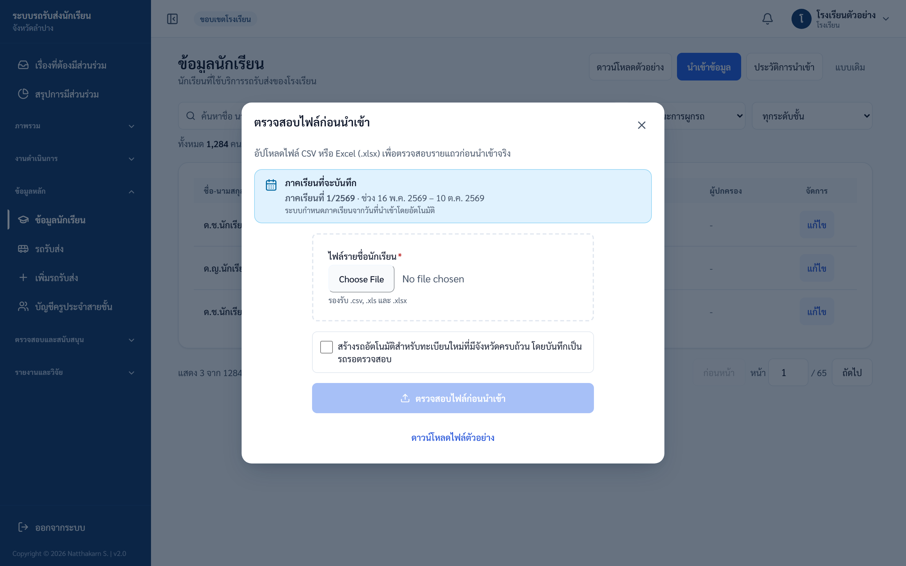
ภาพ: นำเข้านักเรียน: เลือกไฟล์ CSV/Excel แล้วกด "ตรวจสอบไฟล์ก่อนนำเข้า"
งานที่ 5 — ดูประวัติการนำเข้า + ย้อนกลับ — (บัญชีหลักเท่านั้น)
ใช้เมื่อ: ตรวจสอบชุดนำเข้าย้อนหลัง หรือต้องการยกเลิก (rollback) ชุดที่ทำผิด
ขั้นตอน:
- กด "ประวัติการนำเข้า" → เลือกชุดที่ต้องการ (เปิดรายละเอียดรายแถว, ดาวน์โหลดรายงาน, นำเข้าต่อได้)
- (ย้อนกลับ) เลือกแถวที่ต้องย้อนกลับ + ใส่เหตุผล → ยืนยัน
✅ ผลลัพธ์ที่ถูกต้อง: นักเรียนที่ชุดนั้นเพิ่มเข้ามาเองถูกย้อนกลับ (soft delete)
ℹ️ rollback ปลอดภัยจำกัด — ย้อนได้เฉพาะนักเรียนที่ชุดนั้นเพิ่มเข้ามาเอง ไม่แตะนักเรียนเดิม, นักเรียนต่างโรงเรียน หรือการอัปเดตผู้ปกครอง/กู้คืน
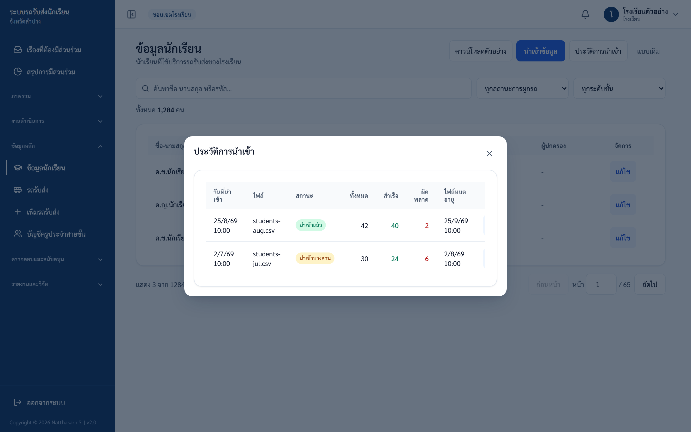
ภาพ: ประวัติการนำเข้า — รายการชุดนำเข้าที่ผ่านมา
งานที่ 6 — นำเข้าแบบเดิม (สำรอง) — (บัญชีหลักเท่านั้น)
ใช้เมื่อ: ต้องการนำเข้าทันทีในครั้งเดียว (ไม่ผ่านขั้นตอน Preview)
ขั้นตอน:
- ที่หน้าข้อมูลนักเรียน กดปุ่มเล็กสีจาง "แบบเดิม" (tooltip "นำเข้าแบบเดิม (สำรอง)")
- อัปโหลดไฟล์ (ดาวน์โหลด template ได้จากปุ่ม "ดาวน์โหลดตัวอย่าง")
- ดูผลและข้อผิดพลาดรายแถวในผลลัพธ์
✅ ผลลัพธ์ที่ถูกต้อง: นำเข้าทันที (มีการกันข้อมูลซ้ำ, กู้คืนนักเรียนที่เคยลบ, รวมผู้ปกครองตามเบอร์)
💡 แนะนำใช้ "นำเข้าข้อมูล" (Preview, งานที่ 4) เป็นหลัก เพราะปลอดภัยกว่าและตรวจสอบก่อนได้
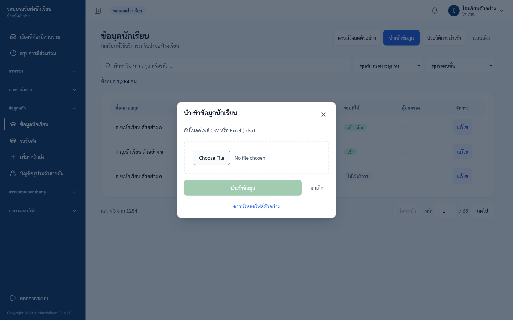
ภาพ: นำเข้าแบบเดิม (สำรอง)
งานที่ 7 — ดูรถรับส่ง
ใช้เมื่อ: ดูรถที่ให้บริการนักเรียนของโรงเรียน + คนขับ/ผู้ดูแล/เจ้าของ + ความปลอดภัย + รายชื่อนักเรียนในรถ
ขั้นตอน:
- เปิดเมนู รถรับส่ง
- ดูรายการรถ + ข้อมูลคนขับ/ผู้ดูแล/เจ้าของ + ความปลอดภัย (ตรวจสภาพ + ประกัน)
- กดขยายแต่ละรถดูรายชื่อนักเรียนในรถ
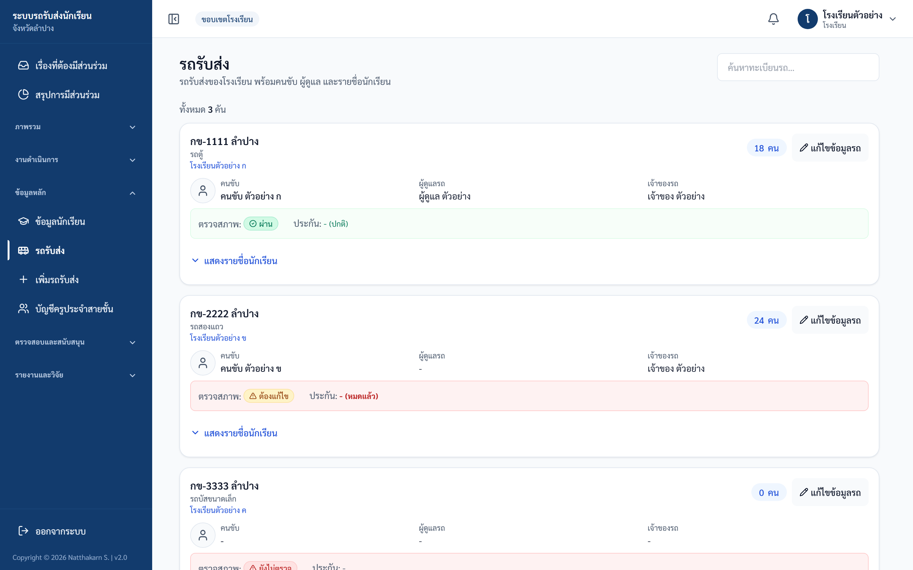
ภาพ: รถรับส่ง
✅ ผลลัพธ์ที่ถูกต้อง: เห็นเฉพาะรถที่มีนักเรียนของโรงเรียนคุณใช้
ℹ️ หน้านี้แก้ไขได้บางส่วน — กด "แก้ไขข้อมูลรถ" ที่การ์ดของรถแต่ละคันเพื่อแก้ ประเภทรถ · ชื่อเจ้าของรถ · เบอร์เจ้าของรถ · สถานะประกัน · ประเภทประกัน · วันหมดอายุประกัน ได้เอง (บัญชีหลักเท่านั้น — ครูประจำสายชั้นเห็นปุ่มนี้แต่บันทึกไม่ได้ ระบบจะตอบว่า "บัญชีครูประจำสายชั้นเข้าถึงได้เฉพาะข้อมูลในการดูเท่านั้น") ทะเบียนรถและการเปลี่ยนคนขับแก้ที่นี่ไม่ได้ (ข้อมูลคนขับ ให้คนขับแก้ไขเองในหน้าโปรไฟล์คนขับ) ส่วนการเพิ่มรถใหม่อยู่ที่เมนู "เพิ่มรถรับส่ง" (งานที่ 8) · มีช่อง "ค้นหาทะเบียนรถ…" ที่มุมขวาบนของหน้าสำหรับกรองรายการ 🔒 บัญชีครูสายชั้น: เบอร์โทรเจ้าของ/คนขับ/ผู้ดูแลถูกปกปิด และจำนวนนักเรียนนับเฉพาะชั้นของตน
งานที่ 8 — เพิ่มรถรับส่ง — (บัญชีหลักเท่านั้น)
ใช้เมื่อ: เพิ่มรถใหม่ (สูงสุด 10 คันต่อครั้ง) + สร้างบัญชีคนขับให้อัตโนมัติ
ขั้นตอน:
- เปิดเมนู เพิ่มรถรับส่ง
- (ทางเลือก) ค้นหารถที่มีอยู่ก่อน
- กรอกทะเบียนแบบ 3 ช่อง: หมวดอักษร / เลขทะเบียน / จังหวัด (ค่าเริ่มต้น ลำปาง)
- เลือก ประเภทรถ (รถตู้ / รถสองแถว / รถบัส / อื่นๆ)
- กรอก ชื่อคนขับ + เบอร์โทรคนขับ และ ชื่อผู้ครอบครองรถ (เจ้าของรถ) — เว้นว่างได้ถ้าเป็นคนเดียวกับคนขับ
- กด "บันทึก N คัน"
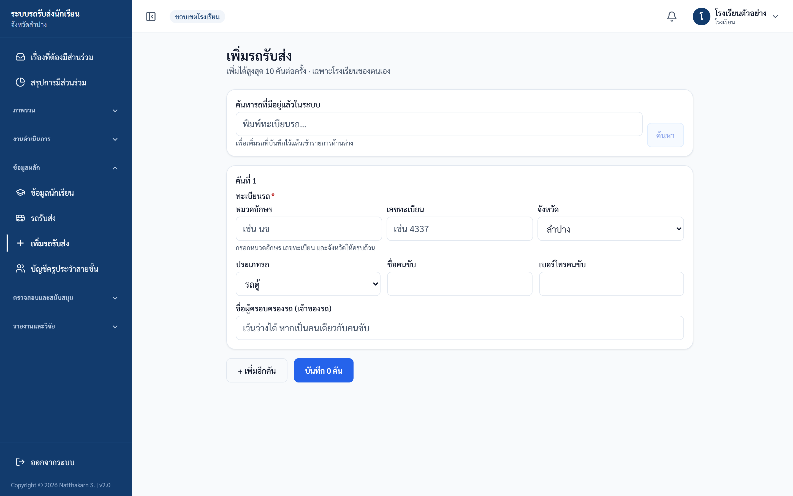
ภาพ: เพิ่มรถรับส่ง
✅ ผลลัพธ์ที่ถูกต้อง: รถถูกเพิ่ม และระบบสร้างบัญชีคนขับให้อัตโนมัติ
⚠️ ถ้าติดปัญหา:
- ชื่อผู้ใช้และรหัสตั้งต้นของคนขับ = ทะเบียนรถ (รูปแบบล็อกอินแสดงใต้ช่องกรอกว่า "ชื่อเข้าระบบ: …") คนขับถูกบังคับเปลี่ยนรหัสครั้งแรก
- หน้าจอไม่แสดงรหัสผ่านคนขับแยกต่างหาก → จดทะเบียนรถไว้แจ้งคนขับ เพราะทะเบียนรถคือทั้งชื่อผู้ใช้และรหัสผ่านเริ่มต้น
- ทะเบียนซ้ำกับที่มีอยู่ → ระบบใช้รถเดิมหรือแจ้ง "ทะเบียนรถนี้มีอยู่ในระบบแล้ว"
- รถถูกปิดใช้งานอยู่ → ระบบไม่กู้คืนอัตโนมัติ มีปุ่ม "ส่งคำขอกู้คืนรถนี้" ให้ admin อนุมัติ
- เกิน 10 คัน → ขึ้น "สูงสุด 10 คันต่อครั้ง"
งานที่ 9 — ส่งตรวจและรับรองรถ
ใช้เมื่อ: สร้างใบส่งตรวจรวมออนไลน์ (รวมจำนวนผู้โดยสารจากทุกโรงเรียนที่ใช้รถคันเดียวกัน) ส่งให้ขนส่งจังหวัดตรวจ + พิมพ์ + มี QR
ขั้นตอน (บัญชีหลักเท่านั้น):
- เปิดเมนู ส่งตรวจและรับรองรถ
- เลือกรถ → กด "สร้างใบส่งตรวจ"
- ถ้าคำขอมาจากคนขับ (สถานะ "รอตรวจสอบ") → เปิดคำขอ แล้วกด "ตรวจสอบถูกต้อง" หรือ "ปฏิเสธคำขอ"
- กด "ยืนยันข้อมูลพร้อมพิมพ์"
- กด "พิมพ์ใบส่งตรวจ" (มี QR ให้ขนส่งสแกน)
- ติดตามสถานะ
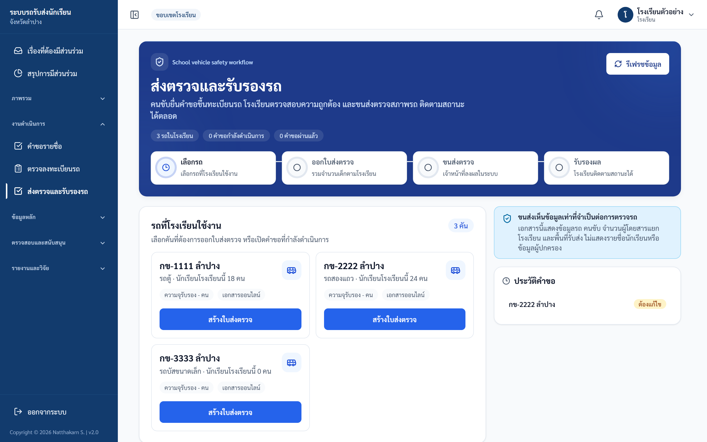
ภาพ: ส่งตรวจและรับรองรถ
✅ ผลลัพธ์ที่ถูกต้อง: มีใบส่งตรวจสถานะหนึ่งใน: รอตรวจสอบ / ฉบับร่าง / พร้อมพิมพ์ / ยื่นแล้ว / กำลังตรวจ / ต้องแก้ไข / ผ่าน / ไม่ผ่าน / ปฏิเสธ / ยกเลิก / หมดอายุ / มีฉบับใหม่
ℹ️ ถ้าคนขับเป็นผู้ยื่นคำขอเข้ามาเอง ใบนั้นจะขึ้นสถานะ "รอตรวจสอบ" — บัญชีโรงเรียนหลักต้องกด "ตรวจสอบถูกต้อง" สถานะจึงเปลี่ยนเป็น "พร้อมพิมพ์" หรือกด "ปฏิเสธคำขอ" แล้วยืนยันในกล่อง "ยืนยันปฏิเสธคำขอ" ซึ่งจะปิดคำขอนั้นและต้องเริ่มกระบวนการใหม่ ℹ️ ใบที่อยู่ระหว่างดำเนินการ (ฉบับร่าง / พร้อมพิมพ์ / ยื่นแล้ว / กำลังตรวจ / ต้องแก้ไข) มีปุ่ม "ยกเลิกคำขอ" และใส่ "เหตุผลที่ยกเลิก (ถ้ามี)" ได้ — ยกเลิกแล้วนำคำขอเดิมกลับมาใช้ไม่ได้ ต้องสร้างใบใหม่ (ใบที่สถานะ "รอตรวจสอบ" ยกเลิกไม่ได้ ให้ใช้ "ปฏิเสธคำขอ" แทน) ℹ️ แถบขั้นตอนบนหน้าจอมี 4 ขั้น: เลือกรถ → ออกใบส่งตรวจ → ขนส่งตรวจ → รับรองผล ℹ️ 1 รถมีคำขอที่ใช้งานอยู่ได้ชุดเดียวต่อภาคเรียน ℹ️ เอกสารที่ส่งให้ขนส่งไม่มีข้อมูลส่วนบุคคล (ไม่มีรายชื่อนักเรียน/ผู้ปกครอง/เบอร์) — แสดงเฉพาะจำนวนแยกโรงเรียน + พื้นที่รับส่งสรุป 🔒 บัญชีครูสายชั้นดูสถานะได้เท่านั้น สร้าง/ยืนยัน/ตรวจสอบไม่ได้ (มีแถบแจ้ง "บัญชีครูประจำสายชั้นดูสถานะได้เท่านั้น")
งานที่ 10 — แผนที่จุดรับส่ง
ใช้เมื่อ: ดู/สร้าง/แก้ไขจุดรับส่งของรถที่ให้บริการโรงเรียน + กำหนดนักเรียนเข้าจุด
ขั้นตอน (สร้างจุด — บัญชีหลักเท่านั้น):
- เปิดเมนู แผนที่จุดรับส่ง
- กด "เพิ่มจุดรับส่ง" → ในหน้าต่างที่เปิดขึ้น ให้เลือก รถ ก่อนเป็นอันดับแรก (จำเป็น — ถ้ายังไม่เลือก ช่องรายชื่อนักเรียนจะขึ้นว่า "เลือกรถก่อนเพื่อดูรายชื่อนักเรียน" และปุ่ม "บันทึก" จะกดไม่ได้)
- กรอก ป้ายชื่อจุด (จำเป็น ไม่เกิน 100 ตัวอักษร) + Latitude / Longitude (พิมพ์เอง หรือคลิกบนแผนที่ด้านล่างเพื่อกำหนดพิกัดให้อัตโนมัติ)
- เลือก รอบ: รอบเช้า / รอบเย็น / ทั้งวัน
- ติ๊กเลือกนักเรียนเข้าจุด (กรองด้วยช่อง "กรองตามชื่อ / ห้อง…" หรือกด "เลือกทั้งหมด") + กรอก หมายเหตุ ได้ตามต้องการ (ไม่บังคับ) → กด "บันทึก"
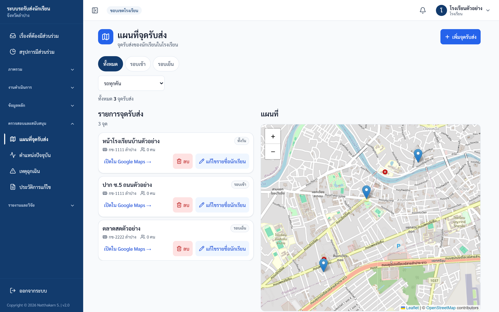
ภาพ: แผนที่จุดรับ-ส่ง
✅ ผลลัพธ์ที่ถูกต้อง: จุดถูกสร้างพร้อมนักเรียนที่กำหนด
⚠️ ถ้าติดปัญหา:
- เลือกได้เฉพาะนักเรียนในโรงเรียนคุณที่อยู่ในรถคันนั้น และห้ามให้นักเรียนคนเดิมมีจุดซ้ำในรอบเดียวกัน
- จุดที่ใช้ร่วมข้ามโรงเรียน เมื่อคุณลบนักเรียนของตน ระบบจะคงนักเรียนของโรงเรียนอื่นไว้
🔒 บัญชีครูสายชั้นดูได้อย่างเดียว สร้าง/แก้ไขไม่ได้
งานที่ 11 — ดูตำแหน่งรถ live
ใช้เมื่อ: ติดตามตำแหน่งรถปัจจุบันของรถที่ให้บริการโรงเรียน (อัปเดตทุก ~15 วินาที)
ขั้นตอน:
- เปิดเมนู ตำแหน่งปัจจุบัน (มือถือ = แท็บ ตำแหน่ง)
- ดูแผนที่ + รายการตำแหน่งรถ พร้อม KPI 4 ใบ (ออนไลน์ / สัญญาณเก่า / หยุดส่ง / "ออฟไลน์ / ยังไม่มีข้อมูล")
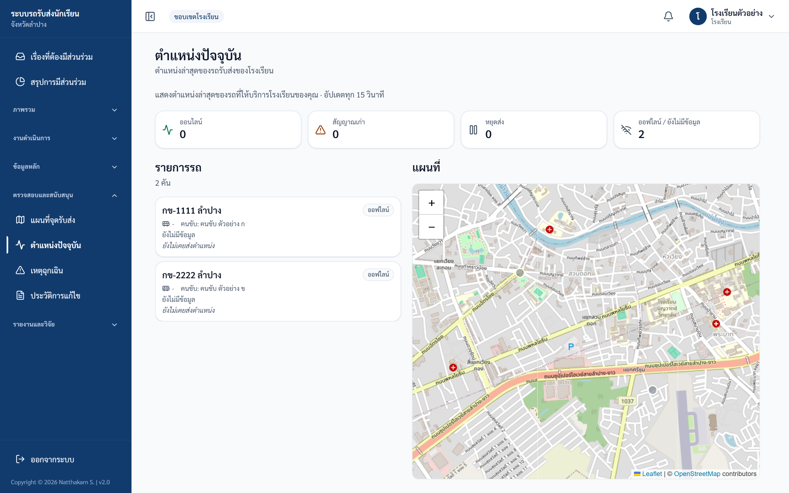
ภาพ: ตำแหน่งรถปัจจุบัน (live)
✅ ผลลัพธ์ที่ถูกต้อง: เห็นตำแหน่งรถที่กำลังส่งสัญญาณ
ℹ️ รถจะปรากฏบนแผนที่เฉพาะตอนที่คนขับเปิดส่งตำแหน่งเท่านั้น 🔒 บัญชีครูสายชั้นเห็นเฉพาะรถที่เกี่ยวกับชั้นของตน
งานที่ 12 — อนุมัติคำขอรายชื่อ — (บัญชีหลักเท่านั้น)
ใช้เมื่อ: คนขับส่งคำขอเพิ่ม-ถอนนักเรียนในรถ (เมนู "คำขอรายชื่อ"; หัวข้อบนหน้าจอ "คำขอเปลี่ยนแปลงรายชื่อ")
ℹ️ สถานะบนระบบจริง ณ 6 ก.ย. 2569: ขณะนี้
FEATURE_DRIVER_REGISTRATIONเปิดอยู่ ระบบจึงซ่อนเมนู "คำขอรายชื่อ" ของฝั่งคนขับ เพื่อให้คนขับใช้ช่องทางเดียวคือ "รายชื่อเด็กในรถ" (เมนู "คำขอรายชื่อ" ของโรงเรียนยังอยู่ตามเดิม) โดยปกติจึงไม่มีคำขอใหม่เข้ามาที่หน้านี้อีก — ให้เปิดดูเป็นครั้งคราวเพื่อเคลียร์คำขอเก่าที่ยังค้างอยู่ในสถานะ "รออนุมัติ" ส่วนงานประจำวันให้ดูหัวข้อ "ตรวจลงทะเบียนรถ" ถัดไป
ขั้นตอน:
- เปิดเมนู คำขอรายชื่อ
- กรองตามสถานะ: รออนุมัติ / อนุมัติแล้ว / ปฏิเสธแล้ว
- ตรวจคำขอแต่ละรายการ (ชนิด "เพิ่มนักเรียน" หรือ "ถอนนักเรียน" + ชื่อนักเรียน + ทะเบียนรถ + ผู้ขอ)
- กด "อนุมัติ" หรือ "ปฏิเสธ" (กรณีปฏิเสธ ระบบจะถามเหตุผลผ่านกล่องข้อความ)
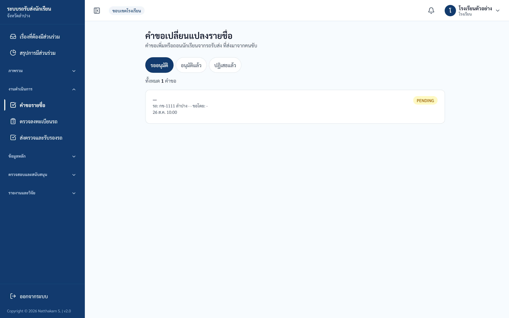
ภาพ: คำขอเปลี่ยนรายชื่อ
✅ ผลลัพธ์ที่ถูกต้อง: นักเรียนปรากฏใน roster จริงของรถเมื่อโรงเรียนอนุมัติแล้ว
🔒 บัญชีครูสายชั้นดูได้อย่างเดียว อนุมัติ/ปฏิเสธไม่ได้
ตรวจลงทะเบียนรถ — รับรายชื่อเด็กจากคนขับ (Phase 10.14) — (บัญชีหลักเท่านั้น)
✅ ฟีเจอร์นี้เปิดใช้งานอยู่จริงบนระบบ — ควบคุมด้วย feature flag
FEATURE_DRIVER_REGISTRATIONซึ่งขณะนี้เปิดอยู่ (สถานะบนระบบจริง ณ 6 ก.ย. 2569) ท่านจะเห็นเมนู "ตรวจลงทะเบียนรถ" ในแถบด้านข้าง ใต้หัวข้อ "งานดำเนินการ" (ระหว่าง "คำขอรายชื่อ" กับ "ส่งตรวจและรับรองรถ") — หากยังไม่เห็นรายการ ให้กดที่หัวข้อ "งานดำเนินการ" เพื่อเปิดกลุ่มเมนูก่อน
ใช้เมื่อ: คนขับส่งรายชื่อเด็กที่ขึ้นรถ (เลือกโรงเรียนของเด็กแต่ละคน) — โรงเรียนตรวจว่าตรงกับฐานข้อมูลนักเรียนจริง แล้วอนุมัติ (เป็นเวอร์ชันใหม่ที่ต่อยอดจาก "อนุมัติคำขอรายชื่อ" ในงานที่ 12)
ขั้นตอน:
- เปิดเมนู "ตรวจลงทะเบียนรถ" → เลือกแท็บ "รอตรวจสอบ" (เห็นทะเบียนรถ + จำนวนเด็ก + จำนวนที่ยังไม่ตรวจ)
- กด "ตรวจสอบ →" เปิดรายชื่อเด็กของโรงเรียนเรา
- จับคู่แต่ละชื่อกับนักเรียนจริง — ระบบ แนะนำคนที่ตรง ให้: กด "ยืนยัน" / เลือกจากหลายคนที่ใกล้เคียง / กด "ค้นหาเอง" (พิมพ์ชื่อ/รหัสค้นเอง) / กด "ไม่ใช่เด็กของโรงเรียนนี้"
- เลื่อนลงไปที่หัวข้อ "เอกสารรถและคนขับ" — ตรวจเอกสารที่คนขับแนบมา (เล่มทะเบียนรถ · พ.ร.บ. · ป้ายภาษีรถ · ประกันภัยรถ · ใบขับขี่ · เอกสารอื่น ๆ) แต่ละรายการมีป้ายสถานะ รอตรวจ / ผ่าน / ไม่ผ่าน และวันหมดอายุ (ถ้าเอกสารนั้นมี) กด "ดูไฟล์" เพื่อเปิดดู แล้วกด "ผ่าน" หรือ "ไม่ผ่าน" — กรณีไม่ผ่านต้องกรอก "เหตุผลที่ไม่ผ่าน" เพื่อให้คนขับแก้ไขให้ถูกต้อง · ถ้าคนขับยังไม่แนบไฟล์ จะขึ้นว่า "ยังไม่มีเอกสารแนบ"
- เมื่อตรวจครบทุกคน กด "อนุมัติทั้งหมด" — หรือ "ส่งกลับแก้ไข" + ใส่เหตุผล (คนขับได้รับแจ้งทาง LINE) · ถ้ายังมีเด็กที่ยังไม่ตรวจ ปุ่มจะเปลี่ยนเป็น "ตรวจให้ครบก่อน (เหลือ N)" และกดไม่ได้ (N คือจำนวนเด็กที่ยังไม่ได้จับคู่) · ปุ่มนี้นับเฉพาะรายชื่อเด็ก ไม่ได้ตรวจว่าเอกสารครบหรือยัง จึงควรตรวจเอกสารให้เสร็จก่อนกดอนุมัติ
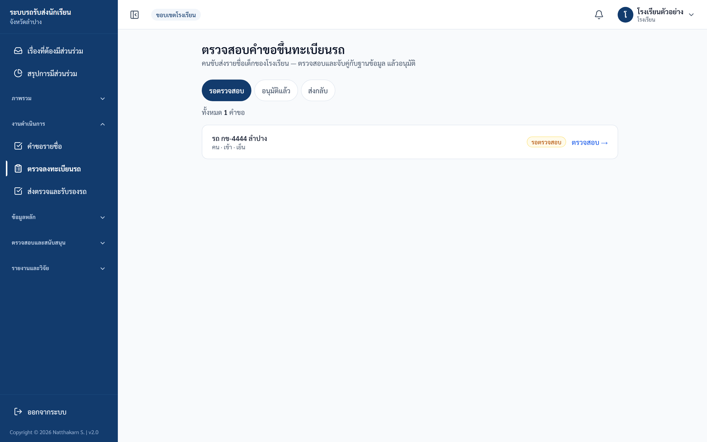
ภาพ: หน้าตรวจลงทะเบียนรถ
✅ ผลลัพธ์ที่ถูกต้อง: อนุมัติได้เมื่อ ไม่มีเด็กที่ "ยังไม่ตรวจสอบ" เหลืออยู่ — เมื่อทุกโรงเรียนอนุมัติครบ และ ขนส่งตรวจสภาพรถผ่าน รถจะขึ้นสถานะ "พร้อมใช้งาน"
🔒 บัญชีครูประจำสายชั้นเข้าหน้านี้ไม่ได้ — เมนู "ตรวจลงทะเบียนรถ" จะไม่ปรากฏในแถบด้านข้าง และถ้าเปิดด้วย URL ตรง ๆ จะเห็นการ์ด "หน้านี้เป็นงานระดับโรงเรียน" ที่แนะนำให้ติดต่อบัญชีหลักของโรงเรียน (คำขอหนึ่งใบคือรายชื่อผู้โดยสารทั้งคันของคนขับ รวมนักเรียนทุกสายชั้น จึงแยกตามสายชั้นไม่ได้)
งานที่ 13 — ยืนยันรับ-ส่งแทนคนขับ (School Override) — (บัญชีหลักเท่านั้น)
ใช้เมื่อ: คนขับลืมเช็กชื่อ ต้องบันทึกสถานะรับ/ส่งแทน
ขั้นตอน:
- ที่แดชบอร์ด กด "ยืนยันแทนคนขับ"
- ด้านบนของหน้าต่างมีปุ่มให้เลือก 2 แบบ — "ทั้งรอบ" (ค่าเริ่มต้น · ใต้ปุ่มเขียนว่า "ติ๊กเฉพาะคนที่ไม่ได้ขึ้นรถ") และ "รายคน" ("เลือกทีละคน")
- เลือก รอบ (ส่งเช้า / รับเย็น) + สถานะ — ตัวเลือกคือ "ยืนยันรับ/มาถึง" (รับเข้ารถ) และ "ยืนยันส่ง/ออก" (ส่งถึงปลายทาง) ระบบเลือกให้อัตโนมัติตามรอบ (เช้า = ยืนยันรับ, เย็น = ยืนยันส่ง) แก้เองได้
- แบบ "ทั้งรอบ" (ค่าเริ่มต้น): ระบบแสดงรายชื่อนักเรียนของโรงเรียน (ค้นหาได้จากช่อง "ค้นหาจากชื่อ / ห้อง / ทะเบียนรถ") ให้ ติ๊กเฉพาะคนที่ไม่ได้ขึ้นรถ เท่านั้น — คนที่ไม่ติ๊กถือว่ามาตามปกติ ส่วนคนที่คนขับกดไปแล้ว คนที่ลา และคนที่ไม่ได้ใช้บริการรอบนั้น จะแสดงเป็นสีจางพร้อมป้ายบอกเหตุผล (เช่น "รับเข้าแล้ว" "ลารอบเช้า") ติ๊กไม่ได้และระบบจะไม่บันทึกซ้ำ · ก่อนบันทึกให้ดูตัวเลขเหนือรายชื่อทุกครั้ง — "จะยืนยันว่า ขึ้นรถ … คน · ไม่ยืนยัน … คน"
- แบบ "รายคน": ค้นหาแล้วเลือกนักเรียนทีละคนในช่อง "เลือกนักเรียน" (ใช้เมื่อต้องแก้ให้คนเดียว)
- กรอก เหตุผล (จำเป็น ไม่เกิน 500 ตัวอักษร) → กดยืนยัน
- เฉพาะแบบ "ทั้งรอบ": เมื่อกรอกเหตุผลแล้วกดปุ่ม "ยืนยัน … คน" ระบบจะยังไม่บันทึกทันที แต่จะขึ้นแถบเตือน "ตรวจตัวเลขอีกครั้งก่อนบันทึก" พร้อมสรุปจำนวน — ตรวจแล้วกดปุ่ม "ยืนยันแน่นอน — … คน" อีกครั้งจึงบันทึกจริง
✅ ผลลัพธ์ที่ถูกต้อง: สถานะถูกบันทึก และส่งแจ้งเตือน LINE ถึงผู้ปกครอง
⚠️ ถ้าติดปัญหา:
- ไม่กรอกเหตุผล → ขึ้น "กรุณาระบุเหตุผลการยืนยันแทน"
- การยืนยันแทนส่งแจ้งเตือน LINE ถึงผู้ปกครองทันที — อย่ากดเล่น
- กลับคำตรง ๆ ไม่ได้ ถ้าผิดต้องลงสถานะใหม่ (คนขับยังกดเช็กชื่อซ้ำได้ปกติ — override ไม่ล็อก)
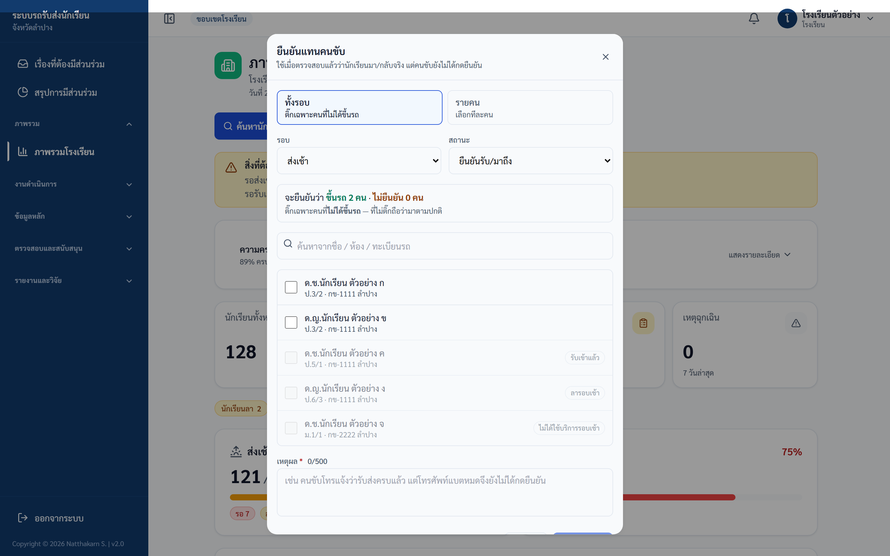
ภาพ: ยืนยันแทนคนขับ — โหมด "ทั้งรอบ" (ติ๊กเฉพาะคนที่ไม่ได้ขึ้นรถ) เลือกรอบ/สถานะ และกรอกเหตุผล
งานที่ 14 — จัดการบัญชีครูประจำสายชั้น — (บัญชีหลักเท่านั้น)
ใช้เมื่อ: สร้าง/รีเซ็ตรหัส/ลบ บัญชีครูที่ดูข้อมูลได้เฉพาะระดับชั้น (read-only) ของโรงเรียนตน
ขั้นตอน (สร้างบัญชี):
- เปิดเมนู บัญชีครูประจำสายชั้น
- กด "+ เพิ่มบัญชีครู"
- กรอก "ชื่อผู้ใช้ *" (แนะนำรูปแบบ
SCH0001-P4) + "ชื่อแสดง (ไม่บังคับ)" + ระดับชั้น (อ.1 – ม.6) + รหัสผ่าน + "ยืนยันรหัสผ่าน *"
⚠️ ช่องรหัสผ่านเขียนกำกับไว้ว่า "รหัสผ่าน * (อย่างน้อย 6 ตัว)" แต่ระบบจริงบังคับอย่างน้อย 8 ตัวอักษร (ไม่เกิน 128 ตัวอักษร · ห้ามตรงกับชื่อผู้ใช้ · ห้ามใช้รหัสที่คาดเดาง่าย เช่น 12345678 · ห้ามใช้ตัวอักษรเดียวซ้ำกันทั้งหมด เช่น aaaaaaaa) — ถ้าตั้งรหัสสั้นกว่า 8 ตัว ตอนกดบันทึกจะขึ้นข้อความรวม ๆ ว่า "ข้อมูลไม่ถูกต้อง" โดยไม่บอกสาเหตุ ให้ตั้งรหัสใหม่ให้ยาวอย่างน้อย 8 ตัวอักษร แล้วบันทึกอีกครั้ง - บันทึก — ครูจะถูกบังคับเปลี่ยนรหัสตอนเข้าครั้งแรก
ขั้นตอน (รีเซ็ต/ลบ):
- ที่รายการครูแต่ละคน กด "รีเซ็ตรหัส" — ระบบเปิดหน้าต่าง "รีเซ็ตรหัสผ่าน: (ชื่อผู้ใช้)" ให้กรอก รหัสผ่านใหม่ + ยืนยันรหัสผ่าน แล้วกดปุ่ม "รีเซ็ตรหัสผ่าน"
- ลบทีละคน: กด "ลบ" ที่แถวนั้น แล้วยืนยันด้วยปุ่ม "ลบบัญชี"
- ลบหลายบัญชีพร้อมกัน: ติ๊กช่องสี่เหลี่ยมหน้าแถวที่ต้องการ (หรือติ๊กช่องบนหัวตารางเพื่อเลือกทั้งหมดในหน้านี้) ระบบจะขึ้นแถบ "เลือกแล้ว … รายการ" เหนือตาราง แล้วกด "ลบบัญชีที่เลือก" (เปลี่ยนใจให้กด "ยกเลิกการเลือก")
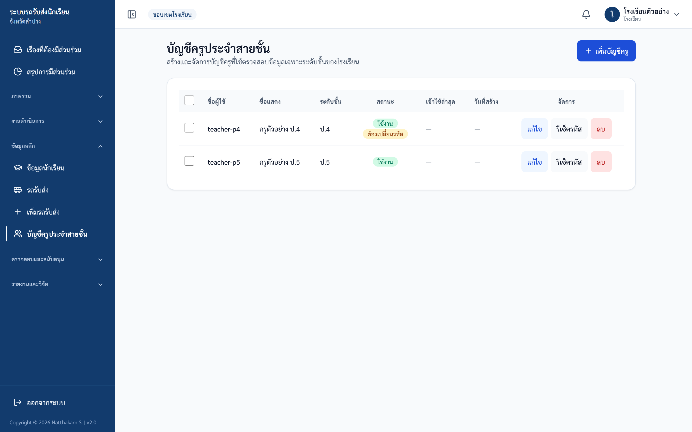
ภาพ: บัญชีครูประจำสายชั้น
✅ ผลลัพธ์ที่ถูกต้อง: บัญชีครูถูกสร้าง/รีเซ็ต/ลบตามที่ทำ
⚠️ ถ้าติดปัญหา:
- รีเซ็ตรหัส → ครูถูกบังคับเปลี่ยนรหัสครั้งถัดไป และเซสชันเดิมของครูถูกตัดทันที
- ชื่อผู้ใช้ห้ามซ้ำ (ขึ้นข้อความถ้าซ้ำ) · ลบบัญชีตัวเองไม่ได้
- ลบ = soft delete + ตัดเซสชันครูทันที
- ปุ่ม "แก้ไข" ในแถวยังทำงานไม่ได้ อยู่ระหว่างแก้ไข กดแล้วระบบไม่ตอบสนอง (ไม่มีหน้าต่างแก้ไขขึ้นมา) — ระหว่างนี้ ถ้าต้องเปลี่ยน ระดับชั้น หรือ ชื่อแสดง ให้สร้างบัญชีใหม่แล้วลบบัญชีเดิม
- ชื่อผู้ใช้ที่ลบไปแล้วนำกลับมาใช้ซ้ำไม่ได้ (ระบบเก็บประวัติบัญชีที่ลบไว้) — ตอนสร้างใหม่ต้องตั้งชื่อผู้ใช้ใหม่ เช่น เปลี่ยนจาก
SCH0001-P4เป็นSCH0001-P4Bถ้าใช้ชื่อเดิมจะขึ้นข้อความภาษาอังกฤษว่า Duplicate entry — record already exists
งานที่ 15 — ดูเหตุฉุกเฉิน
ใช้เมื่อ: ตรวจรายงานเหตุฉุกเฉินจากรถที่ให้บริการโรงเรียน
ขั้นตอน:
- เปิดเมนู เหตุฉุกเฉิน
- ดูรายการ (ทะเบียน, ช่องทาง LINE/เว็บ, รายละเอียด, หมายเหตุ, ผลลัพธ์, ผู้รายงาน)
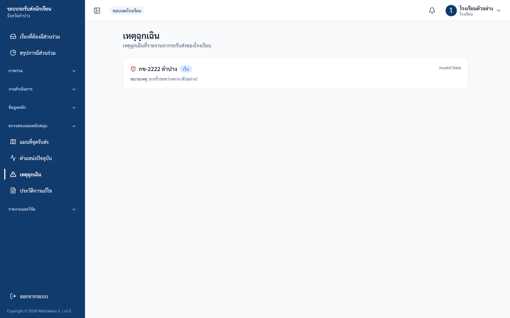
ภาพ: เหตุฉุกเฉิน
✅ ผลลัพธ์ที่ถูกต้อง: เห็นเหตุฉุกเฉินของรถที่ให้บริการโรงเรียน
ℹ️ หน้านี้อ่านอย่างเดียว — โรงเรียนรายงานเหตุเองไม่ได้ ผู้รายงานคือคนขับ 🔒 บัญชีครูสายชั้นเห็นเฉพาะเหตุของรถที่เกี่ยวกับชั้นของตน
งานที่ 16 — ดูประวัติการแก้ไข (Audit Log) — (บัญชีหลักเท่านั้น)
ใช้เมื่อ: สอบทานบันทึกการกระทำในโรงเรียน (สร้าง/แก้ไข/ลบ/นำเข้า/อนุมัติ) + ส่งออก CSV
ขั้นตอน:
- เปิดเมนู ประวัติการแก้ไข
- กรองด้วย ประเภทการกระทำ (action) และ ช่วงวันที่ (date_from / date_to)
- (ทางเลือก) ส่งออกเป็น CSV
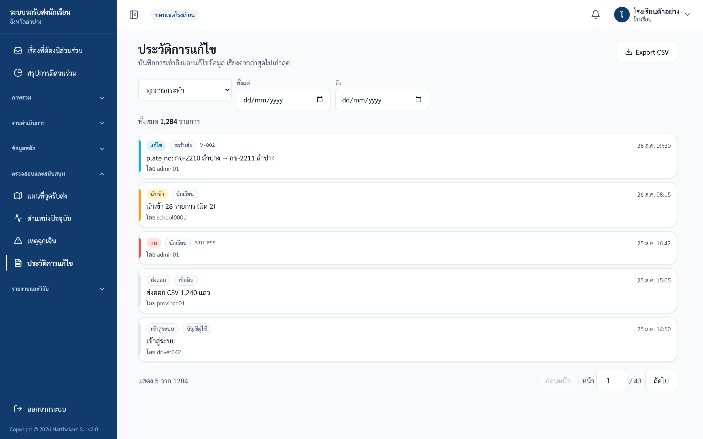
ภาพ: ประวัติการแก้ไข
✅ ผลลัพธ์ที่ถูกต้อง: เห็นรายการ audit ตามตัวกรอง / ได้ไฟล์ CSV (มี BOM, ปกปิดข้อมูลอ่อนไหว, จำกัด 5000 แถว)
🔒 บัญชีครูสายชั้นเข้าไม่ได้ (หน้าแสดงการ์ด "ไม่สามารถเข้าถึงหน้านี้ได้")
งานที่ 17 — ขอโอนย้ายนักเรียน / กู้คืนรถ — (บัญชีหลักเท่านั้น)
ใช้เมื่อ: ย้ายนักเรียนข้ามโรงเรียน หรือกู้คืนรถที่ถูกปิดใช้งาน (ทั้งคู่เป็นคำขอที่รอ admin อนุมัติ ไม่เกิดทันที)
ขั้นตอน (โอนย้ายนักเรียน):
- เปิดหน้าต่างแก้ไขนักเรียน → กด "ขอโอนย้ายนักเรียน"
- กรอก รหัสโรงเรียนปลายทาง* + เหตุผล* + หมายเหตุ/หลักฐาน (ไม่บังคับ) → ส่งคำขอ
- ติดตามสถานะ / ยกเลิกคำขอที่ยังรออนุมัติได้
ขั้นตอน (กู้คืนรถที่ถูกปิดใช้งาน):
- กดปุ่ม "ขอกู้คืนรถ" (ในหน้าต่างตรวจสอบการนำเข้า) หรือ "ส่งคำขอกู้คืนรถนี้" (ในหน้าเพิ่มรถ)
- ส่งคำขอให้ admin อนุมัติ
✅ ผลลัพธ์ที่ถูกต้อง: มีคำขอสถานะหนึ่งใน: รออนุมัติ / โอนย้ายแล้ว / ไม่อนุมัติ / ยกเลิกแล้ว / ไม่สำเร็จ / ต้องตรวจสอบใหม่ (สองสถานะท้ายเกิดเมื่อผู้ดูแลระบบอนุมัติแล้วแต่ระบบย้ายข้อมูลให้ไม่ได้ เช่น มีรหัสนักเรียนซ้ำที่โรงเรียนปลายทาง หรือข้อมูลนักเรียนเปลี่ยนไปหลังส่งคำขอ — ให้ติดต่อผู้ดูแลระบบ)
ช่องกรอกในหน้าต่าง "ขอโอนย้ายนักเรียน": รหัสโรงเรียนปลายทาง* (พิมพ์รหัสโรงเรียนเอง เช่น 52020082) · เหตุผล* (เช่น ย้ายตามผู้ปกครอง) · หมายเหตุ/หลักฐาน (ไม่บังคับ) แล้วกดปุ่ม "ส่งคำขอโอนย้าย"
⚠️ ถ้าติดปัญหา: การโอนย้ายและการกู้คืนรถไม่เกิดทันที — ต้องรอ admin อนุมัติ
ℹ️ ระบบมีฟังก์ชัน "การลา" ของนักเรียนอยู่เบื้องหลัง (จำนวนคนลาแสดงบนแดชบอร์ดและในตารางสถานะ) แต่ปัจจุบันยังไม่มีปุ่ม/หน้าจอสำหรับบันทึกการลาด้วยตนเองในบทบาทโรงเรียน — การลาถูกบันทึกผ่านช่องทางอื่น (เช่น ผู้ปกครอง/คนขับ)
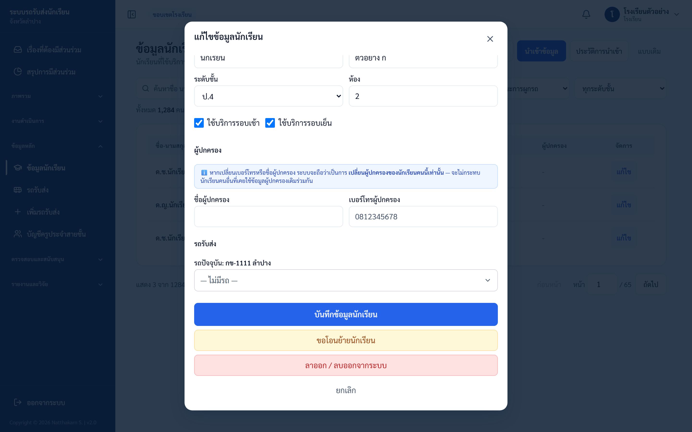
ภาพ: หน้าต่างแก้ไขข้อมูลนักเรียน — กดปุ่ม "ขอโอนย้ายนักเรียน" (ใต้ปุ่ม "บันทึกข้อมูลนักเรียน") เพื่อเปิดหน้าต่างคำขอโอนย้าย
งานที่ 18 — รายงานและส่งออก
ใช้เมื่อ: ดู/ดาวน์โหลดรายงาน (ทั้งบัญชีหลักและครูสายชั้น แต่ครูสายชั้นเห็นเฉพาะข้อมูลในขอบเขตของตน)
ขั้นตอน:
- เปิดเมนู รายงาน (มือถือ = แท็บ รายงาน)
- เลือกแท็บ: รายวัน (เลือกวันที่ที่หัวรายงาน) / รายเดือน (เลือกเดือน) / สรุปภาพรวม
- (รายวัน) ดู KPI 4 ใบ (รถรับส่ง / นักเรียน / ส่งเช้าสำเร็จ % / รับเย็นสำเร็จ %) + แถบ "จุดที่ต้องติดตาม" + ตาราง "สรุปรายโรงเรียน" และ "สรุปรายรถ"
- ที่ท้ายหน้า แถบ "ดาวน์โหลด:" เลือกปุ่ม CSV / Excel / PDF
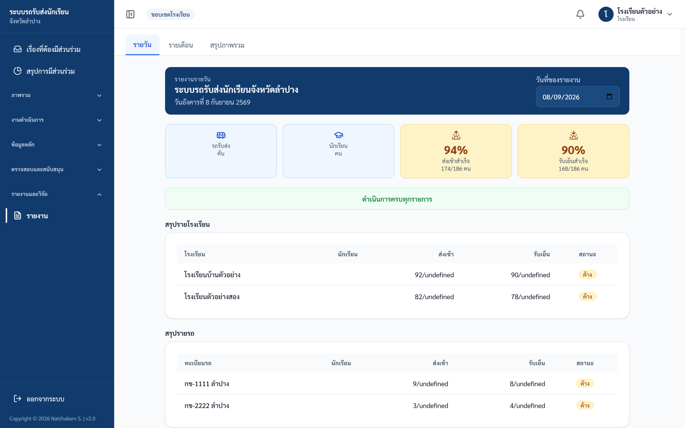
ภาพ: รายงานรายวัน
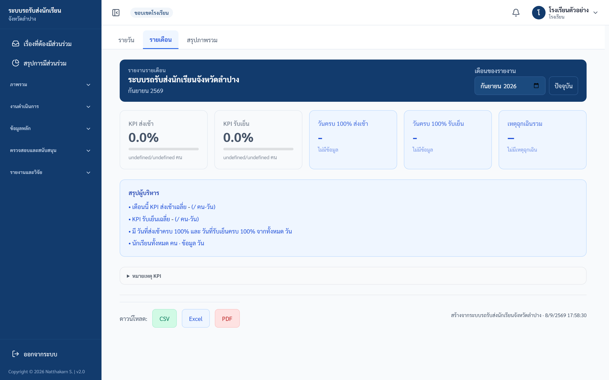
ภาพ: รายงานรายเดือน
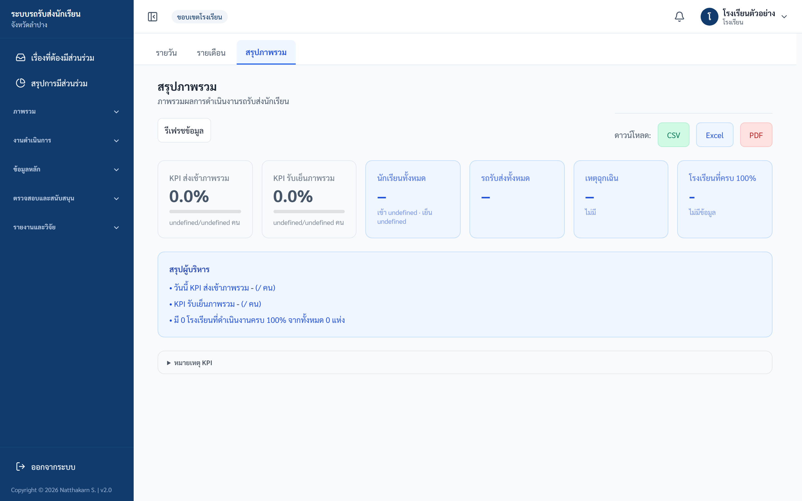
ภาพ: รายงานสรุปภาพรวม
รูปแบบไฟล์ส่งออก:
| ปุ่ม | รายละเอียด |
|---|---|
| CSV | มี BOM (เปิดด้วย Excel แสดงไทยถูก) · คอลัมน์: รหัสนักเรียน, ชื่อ-นามสกุล, ระดับชั้น, ห้อง, โรงเรียน, เขตพื้นที่, ทะเบียนรถ, บริการเช้า/เย็น, สถานะ+เวลาเช้า/เย็น |
| Excel | ไฟล์ .xlsx มีการจัดรูปแบบ (styling) |
| ฟอนต์ไทย Sarabun · สรุป + ตารางรายโรงเรียน + รายคัน |
✅ ผลลัพธ์ที่ถูกต้อง: ได้ไฟล์รายงานตามรูปแบบที่เลือก (ข้อมูลจำกัดตามขอบเขตของคุณ — โรงเรียนเห็นเฉพาะข้อมูลของตนเอง)
⚠️ ถ้าติดปัญหา:
- กดส่งออกแล้วไฟล์ไม่เปิด มักเป็นเพราะเบราว์เซอร์บล็อกป๊อปอัป → อนุญาตป๊อปอัปสำหรับ schoolbuslampang.com
- เบื้องหลัง API รองรับ
school_id,vehicle_idด้วย แต่ขอบเขตถูกบังคับตาม role ของบัญชีอยู่แล้ว
ℹ️ กล่อง "บันทึกการตัดสินใจ" ก่อนดาวน์โหลด PDF เป็นของบทบาทส่วนกลาง (province) เท่านั้น — บัญชีโรงเรียนดาวน์โหลดได้ทันทีโดยไม่มีกล่องนี้
งานที่ 19 — ออกจากระบบ / ลืมรหัสผ่าน
ใช้เมื่อ: สิ้นสุดการใช้งาน หรือต้องการกู้รหัสผ่าน
ขั้นตอน (ออกจากระบบ):
- ปิดเบราว์เซอร์ หรือกดออกจากระบบในเมนูบัญชี — ถ้าไม่กดออกเอง ระบบจะต่ออายุการเข้าสู่ระบบให้อัตโนมัติระยะหนึ่ง เมื่อหมดอายุจะพากลับไปหน้าเข้าสู่ระบบเอง (ระยะเวลาขึ้นกับการตั้งค่าของระบบ สอบถามผู้ดูแลระบบได้) · เครื่องที่ใช้ร่วมกับคนอื่นควรกด "ออกจากระบบ" ทุกครั้ง
ขั้นตอน (ลืมรหัสผ่าน):
- ที่หน้าเข้าสู่ระบบมีหัวข้อ "ลืมรหัสผ่านหรือเข้าใช้งานไม่ได้" กดแล้วจะเห็นกล่อง "ช่องทางขอความช่วยเหลือ" ซึ่งระบุว่า "โรงเรียนและคนขับ: ติดต่อผู้ดูแลบัญชีของโรงเรียน" และ "ต้นสังกัด ขนส่ง และจังหวัด: ติดต่อผู้ดูแลระบบระดับจังหวัด" — ในกล่องนี้ไม่มีปุ่มตั้งรหัสผ่านใหม่ด้วยตนเอง ต้องให้ผู้มีสิทธิ์รีเซ็ตให้เท่านั้น (ดูข้อ 2–3)
- ครูสายชั้น ลืมรหัส → ให้บัญชีหลักรีเซ็ตให้ (เมนู "บัญชีครูประจำสายชั้น" → "รีเซ็ตรหัส")
- บัญชีหลัก ลืมรหัส → ติดต่อเขตพื้นที่ (affiliation) หรือผู้ดูแลระบบ (admin) ให้รีเซ็ต
✅ ผลลัพธ์ที่ถูกต้อง: ออกจากระบบเรียบร้อย / ได้รหัสใหม่จากผู้มีสิทธิ์รีเซ็ต
⚠️ ถ้าติดปัญหา: หลังเปลี่ยนหรือถูกรีเซ็ตรหัส เซสชันเดิมใช้ไม่ได้ ("เซสชันหมดอายุจากการเปลี่ยนรหัสผ่าน") → เข้าสู่ระบบใหม่

ภาพ: เมนูบัญชี (มุมขวาบน) — "เปลี่ยนรหัสผ่าน" / "ออกจากระบบ"
ตารางขอบเขตสิทธิ์ (อ้างอิงด่วน)
บัญชีหลักของโรงเรียน
| ด้าน | ขอบเขต |
|---|---|
| ข้อมูลที่เห็น | เฉพาะข้อมูลของ โรงเรียนตนเอง ทั้งหมด (นักเรียน, รถที่ใช้, สถานะ, เหตุฉุกเฉิน, audit, รายงาน) |
| จัดการนักเรียน | เพิ่ม/แก้ไข/ย้ายรถ/ลบ/นำเข้า/ย้อนกลับ ได้ |
| รถ | เพิ่มรถ + สร้างบัญชีคนขับ, ส่งตรวจรถ, จุดรับส่ง |
| คำขอ/บัญชี | อนุมัติ roster request, ยืนยันแทนคนขับ, จัดการบัญชีครู, ขอโอนย้าย/กู้คืนรถ |
| รายงาน | ดู + ส่งออก CSV/Excel/PDF |
บัญชีครูประจำสายชั้น
| ด้าน | ขอบเขต |
|---|---|
| ข้อมูลที่เห็น | ดูอย่างเดียว เฉพาะนักเรียนในระดับชั้นที่ผูกไว้ |
| ถูกปกปิด (PDPA) | เบอร์ผู้ปกครอง, ที่อยู่จุดลงรถ, เบอร์เจ้าของ/คนขับ/ผู้ดูแล |
| ทำไม่ได้ | แก้/ย้าย/ลบนักเรียน, นำเข้า/ย้อนกลับ, เพิ่มรถ, ยืนยันแทนคนขับ, จัดการบัญชีครู, อนุมัติคำขอ, audit log, จุดรับส่ง(แก้ไข), โอนย้าย/คำขอรถ, สร้าง/ยืนยันใบส่งตรวจรถ |
| เมนูที่ถูกซ่อน | ประวัติการแก้ไข, เพิ่มรถรับส่ง, บัญชีครูประจำสายชั้น, ตรวจลงทะเบียนรถ |
ℹ️ บัญชีครูสายชั้นจะเห็นป้ายขอบเขต เช่น "ขอบเขตข้อมูล: ป.X · บัญชีครูประจำสายชั้น — ดูข้อมูลได้อย่างเดียว"
สิ่งที่บทบาทโรงเรียนทำไม่ได้ (และใครทำแทน)
| ทำไม่ได้ | ใครทำแทน |
|---|---|
| เช็กชื่อรับ-ส่งตามปกติ | คนขับ (โรงเรียนทำได้แค่ "ยืนยันแทนคนขับ" พร้อมเหตุผล) |
| รายงานเหตุฉุกเฉิน | คนขับ (โรงเรียนดูอย่างเดียว) |
| โอนย้ายนักเรียนข้ามโรงเรียน / กู้คืนรถถูกปิด | ส่งคำขอ → admin อนุมัติ (ไม่เกิดทันที) |
| ตรวจสภาพรถ / ลงผลตรวจ | เจ้าหน้าที่ขนส่ง (transport) |
| สร้างบัญชีโรงเรียน / เพิ่มโรงเรียนใหม่ | เขตพื้นที่ (affiliation) หรือ admin |
| จัดการ user ข้ามโรงเรียน / ตั้งค่าระบบ | admin |
| เห็นข้อมูลโรงเรียนอื่น | ไม่ได้ (จะขึ้นไม่มีสิทธิ์/ไม่พบข้อมูล) |
สรุปปัญหาที่พบบ่อย
| อาการ | วิธีแก้ |
|---|---|
| นำเข้าไฟล์ไม่ได้ ขึ้นว่าไฟล์ไม่รองรับ | รับเฉพาะ .xlsx หรือ .csv (.xls Excel เก่าไม่ได้ — ตรวจชนิดไฟล์จริง) · ขนาด ≤ 5MB · ≤ 5000 แถว |
| นำเข้าแล้วขึ้น "ไม่พบรถ" | ระบบไม่สร้างรถให้เอง เว้นแต่ติ๊กช่อง "สร้างรถอัตโนมัติสำหรับทะเบียนใหม่ที่มีจังหวัดครบถ้วน โดยบันทึกเป็นรถรอตรวจสอบ" ก่อนกด "ตรวจสอบไฟล์ก่อนนำเข้า" (รถที่สร้างจะมีสถานะรอตรวจสอบ) → ถ้าไม่ติ๊ก ให้ไปเพิ่มรถที่เมนู "เพิ่มรถรับส่ง" ก่อน แล้วตรวจไฟล์ใหม่ · ทะเบียนต้องระบุจังหวัดเสมอ |
| แก้เบอร์ผู้ปกครองแล้วผู้ปกครองไม่ได้รับแจ้งเตือน LINE | การเปลี่ยนชื่อ/เบอร์ = สร้างผู้ปกครองใหม่เฉพาะนักเรียนคนนี้ ซึ่งยังไม่ผูก LINE → ให้ผู้ปกครองผูก LINE ใหม่เองทาง LINE OA |
| ค้นหานักเรียนไม่เจอทั้งที่เคยมี | การลบเป็น soft delete (ซ่อนจากรายการ ประวัติยังอยู่) → นำเข้าใหม่หรือกู้คืนผ่านการนำเข้า |
| รหัสนักเรียนซ้ำตอนนำเข้า | ซ้ำในโรงเรียนเดียวกัน = ข้าม/บล็อก · ซ้ำในไฟล์เดียวกัน = ต้องแก้ไฟล์ก่อน · ซ้ำต่างโรงเรียน = คนละคน นำเข้าได้ |
| ครูประจำชั้นกดปุ่มแก้ไขไม่ได้ / "ไม่มีสิทธิ์" | บัญชีครูสายชั้นดูอย่างเดียว — แก้ไข/นำเข้า/อนุมัติ/เพิ่มรถทำไม่ได้ (บางเมนูถูกซ่อน) → ให้บัญชีหลักทำ |
| ครูสายชั้นลืมรหัสผ่าน | ไม่มีระบบรีเซ็ตด้วยตัวเอง → บัญชีหลักไปเมนู "บัญชีครูประจำสายชั้น" → "รีเซ็ตรหัส" |
| ส่งออก PDF/ไฟล์ไม่ทำงาน | เบราว์เซอร์บล็อกป๊อปอัป → อนุญาตป๊อปอัปสำหรับ schoolbuslampang.com แล้วลองใหม่ |
| โอนย้ายนักเรียน/กู้คืนรถแล้วยังไม่เกิดอะไร | เป็นคำขอที่รอ admin อนุมัติ (ไม่ทันที) → ติดตามสถานะ (รออนุมัติ/โอนย้ายแล้ว/ไม่อนุมัติ/ยกเลิกแล้ว) ยกเลิกคำขอที่ยังรอได้ |
| เปลี่ยน/ถูกรีเซ็ตรหัสแล้วถูกเด้งออก | token เดิมใช้ไม่ได้ ("เซสชันหมดอายุจากการเปลี่ยนรหัสผ่าน") → เข้าสู่ระบบใหม่ |
เมื่อแจ้งปัญหากับทีม ส่งข้อมูลนี้เพื่อช่วยได้เร็วขึ้น: ชื่อผู้ใช้ + รหัสโรงเรียน (เช่น SCH0001) · เมนู/หน้าที่เกิดปัญหา · เวลาที่เกิด · ภาพหน้าจอ + ข้อความ error
ติดต่อขอความช่วยเหลือ:
- บัญชีหลักลืมรหัส / บัญชีถูกปิด → เขตพื้นที่ (affiliation) หรือผู้ดูแลระบบ (admin)
- ครูสายชั้นลืมรหัส → บัญชีหลักของโรงเรียนรีเซ็ตให้
- โอนย้ายนักเรียน / เพิ่มโรงเรียน / กู้คืนรถ → ส่งคำขอในระบบ รอ admin/เขต อนุมัติ
- ตรวจสภาพรถ → เจ้าหน้าที่ขนส่ง (transport)
สิ้นสุดคู่มือปฏิบัติงานสำหรับโรงเรียน — ขอบคุณที่ดูแลความปลอดภัยของนักเรียนทุกคน